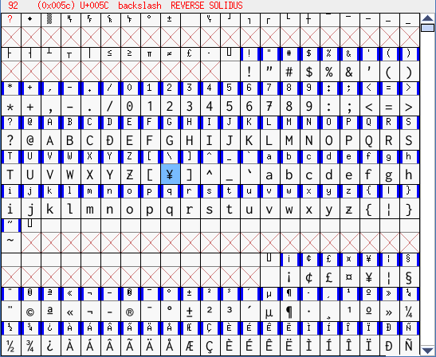

MacOSの場合は、比較的綺麗なフォントが揃っているでしょうが、
Windowsの場合は、日本語が使えるフォントでアルファベットも綺麗なフォントというのは、
あまりありません。
個人的には、以下のようにするのがお勧めです。
Ricty Diminished Discord が日本語も英語も良好な形状で表示できます。
しかし、そのままだと、「(半角)￥」が「(半角)＼」に表示されてしまいます。
そこで、FontForgeなどを利用して、「(半角)＼」の部分に、
Ricty Diminished Discord自身のフォントから「(半角)￥」をコピー＆ペーストしておきましょう。
